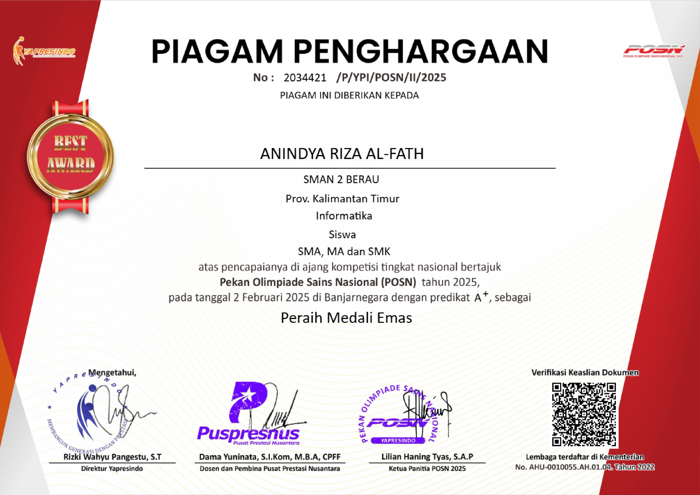

Tentang Saya
Saya Anindya Riza Al-Fath, lahir di Berau pada 21 September 2007, kini mahasiswa Informatika di Institut Teknologi Kalimantan. Sejak kecil, saya menempuh pendidikan di Berau, dari SD swasta hingga SMAN 2 Berau. Impian saya sederhana: menjadi pribadi yang diteladani, walau hanya oleh satu orang, itu sudah membanggakan. Semua ini tak lepas dari doa dan dukungan orang tua saya, Selamet Hariadi dan Herawati Siregar.
Pendidikan
- 2013 - 2019 MI Al-Ihsan Kab. Berau
- 2019 - 2022 MTsN Kab. Berau
- 2022 - 2025 SMA Negeri 2 Kab. Berau
Keahlian Saya
Teknis
Soft Skills
Prestasi Saya
